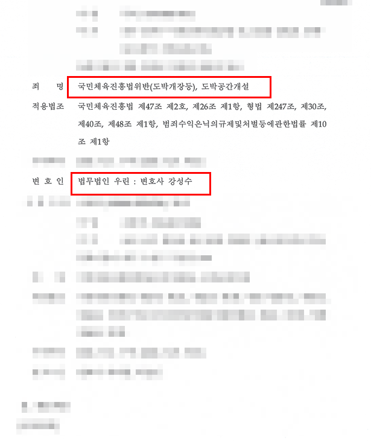

핵심 결과
의뢰인은 도박공간개설 및 국민체육진흥법위반(도박개장등) 혐의로 형사재판을 받았습니다.
도박 운영 사건은 가담 기간과 역할, 취득한 이익 및 범죄수익 문제가 함께 판단될 수 있어 실형 위험을 가볍게 볼 수 없습니다.
사건에서 맡은 실제 역할과 가담 정도, 범행 이후의 사정과 재범 방지 자료를 정리해 변론한 결과 실형 구금을 피하고 집행유예를 선고받았습니다.
| 구분 | 내용 |
|---|---|
| 사건 분야 | 도박·형사 |
| 적용 혐의 | 도박공간개설, 국민체육진흥법위반(도박개장등) |
| 주요 쟁점 | 실제 역할, 가담 기간과 정도, 이익과 범죄수익 |
| 핵심 대응 | 역할 구분, 양형사정과 재범 방지 자료 정리 |
| 최종 결과 | 집행유예 |
사건 개요
이번 사건은 도박공간개설과 국민체육진흥법위반 혐의가 함께 적용된 사건입니다.
불법 도박 운영 사건은 단순히 도박에 참여한 경우와 달리, 장소나 시스템을 제공하고 이용자를 모집하거나 수익을 관리한 행위가 문제 됩니다. 여러 사람이 함께 관여했다면 각 피고인이 맡은 역할과 의사결정 권한, 실제 취득한 이익을 구분하는 것이 중요합니다.
또한 관련 계좌의 입출금 전체가 개인의 수익으로 평가되는지, 단순 전달·정산 금액이 포함됐는지에 따라 범죄수익과 추징 범위가 달라질 수 있습니다.
도박 운영 사건에서 실형 위험을 높이는 요소
- 운영 기간이 길거나 이용 규모가 큰 경우
- 주도적으로 사이트나 도박장을 관리한 경우
- 회원 모집과 수익 배분에 직접 관여한 경우
- 동종 범죄 전력이 있거나 범죄수익이 큰 경우
- 수사 과정에서 증거를 없애거나 공범과 진술을 맞춘 정황이 있는 경우
핵심 쟁점
첫 번째 쟁점은 의뢰인이 전체 범행에서 맡은 실제 역할이었습니다.
공범이 있는 사건에서는 모두를 같은 정도로 평가해서는 안 됩니다. 운영을 결정하고 수익을 지배한 사람과 지시에 따라 제한된 업무만 담당한 사람의 책임은 구분해서 설명할 필요가 있습니다.
두 번째 쟁점은 가담 기간과 범죄수익이었습니다.
계좌에 나타난 거래액, 도박 판돈, 운영수익과 개인이 실제 취득한 이익은 서로 다를 수 있습니다. 자금의 성격과 이동 경로를 구체적으로 확인해야 합니다.
세 번째 쟁점은 재범 가능성과 양형사정이었습니다.
범행에서 이탈한 경위, 관련 계정과 장비의 정리, 직업과 가족관계, 다시 같은 환경에 접근하지 않기 위한 조치를 객관적인 자료로 보여줄 필요가 있었습니다.
변호 전략
1. 공범별 역할과 의뢰인의 가담 범위를 구분했습니다
사건 기록과 연락 내용, 업무 흐름을 검토해 의뢰인이 실제로 담당한 업무와 의사결정 범위를 정리했습니다.
2. 거래금액과 실제 이익을 나눠 살폈습니다
관련 계좌의 돈이 모두 개인 수익으로 오해되지 않도록 입출금의 성격과 정산 구조를 확인하고, 의뢰인이 실제 취득한 이익의 범위를 검토했습니다.
3. 재범 방지와 생활환경 자료를 준비했습니다
범행 이후 도박 운영 환경에서 벗어난 사정과 직업·가족관계, 재범을 막기 위해 취한 조치를 사건 내용에 맞춰 제출했습니다.
결과
법원은 사건의 내용과 의뢰인의 역할, 가담 정도 및 제출된 양형자료를 종합해 집행유예를 선고했습니다.
구체적인 징역 기간과 부가 명령은 공개된 자료에서 확인되는 범위 밖이므로 별도로 기재하지 않았습니다.
최종 결과: 집행유예
도박공간개설과 국민체육진흥법위반 혐의가 함께 적용됐지만, 실형 구금을 피하고 집행유예로 사건을 마무리했습니다.
자주 묻는 질문
| 질문 | 답변 |
|---|---|
| 도박에 참여한 것과 도박공간개설은 무엇이 다른가요? | 단순 이용을 넘어 도박할 장소나 시스템을 마련하고 운영에 관여했는지가 핵심 차이입니다. |
| 직원 역할만 했어도 처벌되나요? | 구체적 업무와 범행 인식에 따라 공범 책임이 문제 될 수 있습니다. 주도자와 동일한 책임인지 여부는 별도로 다퉈야 합니다. |
| 계좌 거래액이 모두 범죄수익인가요? | 거래액 전체와 개인이 실제 취득한 이익은 다를 수 있으므로 자금의 성격과 이동 경로를 구분해야 합니다. |
| 초범이면 집행유예가 보장되나요? | 아닙니다. 운영 기간과 규모, 역할, 이익, 피해 회복과 재범 위험 등을 종합해 판단합니다. |
| 언제 변호사와 상담해야 하나요? | 압수수색이나 계좌 추적이 시작되면 첫 진술 전에 역할과 자금 흐름을 정리하는 것이 좋습니다. |
결론
도박공간개설 사건은 운영 규모만이 아니라 피고인이 실제로 맡은 역할과 취득한 이익을 구체적으로 구분하는 것이 중요합니다.
공범 전체의 행위를 그대로 떠안지 않도록 기록과 자금 흐름을 확인하고, 재범 방지 자료를 사건에 맞춰 준비해야 합니다.
강성수 변호사는 사건 기록과 계좌 자료를 직접 검토해 현재 단계에서 필요한 대응 방향을 정리합니다.
이 글은 일반적인 법률 정보 제공을 위한 자료이며, 개별 사건의 결과를 보장하지 않습니다. 구체적인 대응은 사실관계와 증거에 따라 달라질 수 있습니다.